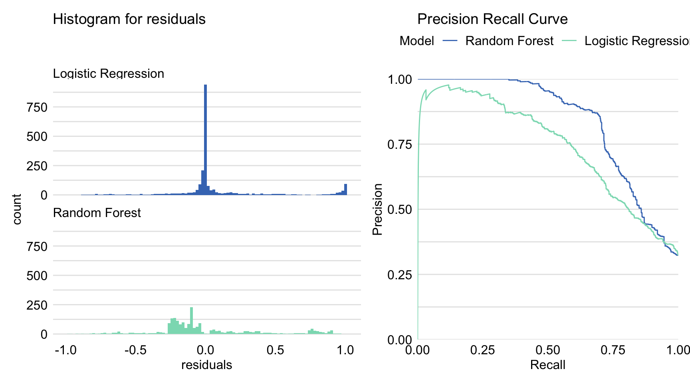

16 Model Performance Measures
16.1 Introduction
In this chapter, we present measures that are useful for the evaluation of the overall performance of a predictive model. They may be applied for several purposes:
- model evaluation: we may want to know how good is the model, i.e., how reliable are the model predictions (how frequent and how large errors we may expect);
- model comparison: we may want to compare two or more models in order to choose between them;
- out-of-sample and out-of-time comparisons: we may want to check model’s performance when applied to new data to evaluate if the performance has not worsened.
Depending of the nature of the dependent variable (continuous, binary, categorical, count, etc.), different model performance measures may be used. Moreover, the list of useful measures is growing as new applications emerge. In this chapter, we focus on a selected set of measures that are used in model-level exploration techniques that are introduced in subsequent chapters.
16.2 Intuition
Most model performance measures are based on comparison of the model predictions with the (known) values of the dependent variable in a dataset. For an ideal model, the predictions and the dependent-variable values should be equal. In practice, it is never the case, and we want to quantify the disagreement.
In applications, we can weigh differently the situation when the prediction is, for instance, larger than the true value, as compared to the case when it is smaller. Depending on the decision how to weigh different types of disagreement, we may need different performance measures.
When assessing model’s overall performance, it is important to take into account the risk of overestimation of the quality of the performance when considering the data that were used for developing of the model. To mitigate the risk, various assessment strategies, such as cross-validation, have been proposed (see (???)). In what follows, we consider the simple train-test-split strategy, i.e., we assume that the available data are split into a training set and a testing set. Model is created on the training set, and the testing set is used to assess the model’s performance.
In the best possible scenario we can specify a single model performance measure before the model is created and then we optimize model for this measure. But in practice the more common scenario is to have few performance measures that are often selected after the model is created.
16.3 Method
Assume that we have got a testing dataset with \(n\) observations on \(p\) explanatory variables and on a dependent variable \(Y\). Let \(x_i\) denote the (column) vector of values of the explanatory variables for the \(i\)-th observation, and \(y_i\) the corresponding value of the dependent variable. Denote by \(\widehat{y}_i=f(x_i)\) model’s \(f()\) prediction corresponding to \(y_i\). Let \(X=(x'_1,\ldots,x'_n)\) denote the matrix of explanatory variables for all \(n\) observations, and \(y=(y_1,\ldots,y_n)'\) denote the (column) vector of the values of the dependent variable.
16.3.1 Continuous dependent variable
The most popular model performance measure for models for a continuous dependent variable is the mean squared-error, defined as
\[\begin{equation} MSE(f,X,y) = \frac{1}{n} \sum_{i}^{n} (f(x_i) - y_i)^2 = \frac{1}{n} \sum_{i}^{n} r_i^2, \tag{16.1} \end{equation}\]
where \(r_i=f(x_i) - y_i\) is the residual for the \(i\)-th observation. Thus, MSE can be seen as a sum of squared residuals. MSE is a convex differentiable function, which is important from an optimization point of view. As the measure weighs all differences equally, large residuals have got a high impact on MSE. Thus, the measure is sensitive to outliers. For a ‘’perfect’’ predictive model, which predicts all \(y_i\) exactly, \(MSE = 0\).
Note that MSE is constructed on a different scale than the dependent variable. Thus, a more interpretable variant of this measure is the root-mean-squared-error (RMSE), defined as
\[\begin{equation} RMSE(f, X, y) = \sqrt{MSE(f, X, y)}. \tag{16.2} \end{equation}\]
A popular variant of RMSE is its normalized version, \(R^2\), defined as
\[\begin{equation} R^2(f, X, y) = 1 - \frac{MSE(f, X, y)}{MSE(f_0, X,y)}. \tag{16.3} \end{equation}\]
In (16.3), \(f_0()\) denotes a ‘’baseline’’ model. For instance, in the case of the classical linear regression, \(f_0()\) is the model that includes only the intercept, which implies the use of the average value of \(Y\) as a prediction for all observations. \(R^2\) is normalized in the sense that the ‘’perfect’’ predictive model leads to \(R^2 = 1\), while \(R^2 = 0\) means that we are not doing better than the baseline model. In the context of the classical linear regression, \(R^2\) is the familiar coefficient of determination and can be interpreted as the fraction of the total variance of \(Y\) explained by model \(f()\).
Given sensitivity of MSE to outliers, sometimes the median absolute-deviation (MAD) is considered as a model performance measure:
\[\begin{equation} MAD(f, X ,y) = median( |r_1|, ..., |r_n| ). \tag{16.4} \end{equation}\]
MAD is more robust to outliers than MSE. A disadvantage of MAD are its less favorable mathematical properties.
16.3.2 Binary dependent variable
To introduce model performance measures, we, somewhat arbitrarily, label the two possible values of the dependent variable as ‘’success’’ and ‘’failure’‘. (Of course, in a particular application, the meaning of the’‘success’’ outcome does not have to be positive nor optimistic; in diagnostic tests ‘’success’’ often means detection of a diseases.) We also assume that model prediction \(f(x_i)\) takes the form of the predicted probability of success.
If, additionally, we assign the value of 1 to success and 0 to failure, it is possible to use MSE, RMSE, and MAE, as defined in (16.1), (16.2), (16.4), respectively, as a model performance measure. In practice, however, those summary measures are not often used. One of the main reasons is that they penalize too mildly for wrong predictions. In fact, the maximum penalty for an individual prediction is equal to 1 (if, for instance, the model yields zero probability for an actual success).
To address this issue, the log-likelihood function based on the Bernoulli distribution can be used:
\[\begin{equation} l(f, X ,y) = -\sum_{i=1}^{n} [y_i \ln\{f(x_i)\}+ (1-y_i) \ln\{1-f(x_i)\}]. \tag{16.5} \end{equation}\]
Note that, in the machine-learning world, often \(l(f, X ,y)/n\) is considered (sometimes also with \(\ln\) replaced by \(\log_2\)) and termed ‘’logloss’’ or ‘’cross-entropy’‘. The log-likelihood heavily’‘penalizes’’ the cases when the model-predicted probability of success \(f(x_i)\) is high for an actual failure (\(y_i=0\)) and low for an actual success (\(y_i=1\)).
In many situations, however, a consequence of a prediction error depends on the form of the error. For this reason, performance measures based on the (estimated values of) probability of correct/wrong prediction are more often used. To introduce some of those measures, we assume that, for each observation from the testing dataset, the predicted probability of success \(f(x_i)\) is compared to a fixed cut-off threshold, \(C\) say. If the probability is larger than \(C\), then we assume that the model predicts success; otherwise, we assume that it predicts failure. As a result of such a procedure, the comparison of the observed and predicted values of the dependent variable for the \(n\) observations in the testing dataset can be summarized in the following table:
True value: success |
True value: failure |
Total | |
|---|---|---|---|
\(f(x) > C\), predicted: success |
True Positive: \(TP_C\) | False Positive (type I error): \(FP_C\) | \(P_C\) |
\(f(x) \leq C\), predicted: failure |
False Negative (type II error): \(FN_C\) | True Negative: \(TN_C\) | \(N_C\) |
| Total | S | F | \(n\) |
In machine-learning world, the table is often referred to as the ‘’confusion table’’ or ‘’confusion matrix’‘. In statistics, it is often called the’‘decision table’’. The counts \(TP_C\) and \(TN_C\) on the diagonal of the table correspond to the cases when the predicted and observed value of the dependent variable \(Y\) coincide. \(FP_C\) is the number of cases in which failure is predicted as success. These are false-positive, or type I error, cases. On the other hand, \(FN_C\) is the count of false-negative, or type II error, cases, in which success is predicted as failure. Marginally, there are \(P_C\) predicted successes and \(N_C\) predicted failures, with \(P_C+N_C=n\). In the testing dataset, there are \(S\) observed successes and \(F\) observed failures, with \(S+N=n\).
The simplest measure of model performance is Accuracy, defined as
\[ ACC_C = \frac{TP_C+TN_C}{n}. \] It is the fraction of correct predictions in the entire testing dataset. Accuracy is of interest if true positives and true negatives are more important than their false counterparts. However, accuracy may not be very informative when one of the binary categories is much more prevalent. For example, if the testing data contain 90% of successes, a model that would always predict a success would reach accuracy of 0.9, although one could argue that this is not a very useful model.
There may be situations when false positives and/or false negatives may be of more concern. In that case, one might want to keep their number low. Hence, other measures, focused on the false results, might be of interest.
In the machine-learning world, two other measures are often considered: Precision and Recall. Precision is defined as
\[ Precision_C = \frac{TP_C}{TP_C+FP_C} = \frac{TP_C}{P_C}. \] Precision is also referred to as the positive predictive value. It is the fraction of correct predictions among the predicted successes. Precision is high if the number of false positives is low. Thus, it is a useful measure when the penalty for committing the type I error (false positive) is high. For instance, consider the use of a genetic test in cancer diagnostics, with a positive result of the test taken as an indication of an increased risk of developing a cancer. A false positive result of a genetic test might mean that a person would have to unnecessarily cope with emotions and, possibly, medical procedures, related to the fact of being evaluated as having a high risk of developing a cancer. We might want to avoid this situation more than the false negative case. The latter would mean that the genetic test gives a negative result for a person that, actually, might be at an increased risk of developing a cancer. However, an increased risk does not mean that the person will develop cancer. And even so, we could hope that we could detect it in due time.
Recall is defined as
\[ Recall_C = \frac{TP_C}{TP_C+FN_C} = \frac{TP_C}{S_C}. \] Recall is also referred to as sensitivity or true positive rate. It is the fraction of correct predictions among the true successes. Recall is high if the number of false negatives is low. Thus, it is a useful measure when the penalty for committing the type II error (false negative) is high. For instance, consider the use of an algorithm that predicts whether a bank transaction is fraudulent. A false negative result means that the algorithm accepts a fraudulent transaction as a legitimate one. Such a decision may have immediate and unpleasant consequences for the bank, because it may imply a non-recoverable loss of money. On the other hand, a false positive result means that a legitimate transaction is considered as fraudulent one and is blocked. However, upon further checking, the legitimate nature of the transaction can be confirmed with, perhaps, annoyed client as the only consequence for the bank.
The harmonic mean of these two measures defines the F1 score:
\[ F1\ score_C = \frac{2}{\frac{1}{Precision_C} + \frac{1}{Recall_C}} = 2\cdot\frac{Precision_C \cdot Recall_C}{Precision_C + Recall_C}. \] F1 score tends to give a low value if either precision or recall is low, and a high value if both precision and recall are high. For instance, if precision is 0, F1 score will also be 0 irrespectively of the value of recall. Thus, it is a useful measure if we have got to seek a balance between precision and recall.
In statistics, and especially in applications in medicine, the popular measures are Sensitivity and Specificity. Sensitivity is simply another name for recall. Specificity is defined as
\[ Specificity_C = \frac{TN_C}{TN_C + FP_C} = \frac{TN_C}{F_C}. \] Specificity is also referred to as true negative rate. It is the fraction of correct predictions among the true failures. Specificity is high if the number of false positives is low. Thus, as precision, it is a useful measure when the penalty for committing the type I error (false positive) is high.
The reason why sensitivity and specificity may be more often used outside the machine-learning world is related to the fact that their values do not depend on the proportion \(S/n\) (sometimes termed ‘’prevalence’’) of true successes. This means that, once estimated in a sample obtained from a population, they may be applied to other populations, in which the prevalence may be different. This is not true for precision, because one can write
\[ Precision_C = \frac{Sensitivity_C \cdot \frac{S}{n}}{Sensitivity_C \cdot \frac{S}{n}+Specificity_C \cdot \left(1-\frac{S}{n}\right)}. \]
All the measures depend on the choice of cut-off \(C\). To assess the form and the strength of dependence, a common approach is to construct the Receiver Operating Characteristic (ROC) curve. The curve plots the \(Sensitivity_C\) in function of \(1-Specificity_C\) for all possible, ordered values of \(C\). Figure 16.1 presents the ROC curve for the random-forest model for the Titanic dataset (see Section 5.1.3). Note that the curve indicates an inverse relationship between sensitivity and specificity: by increasing one measure, the other is decreased.
Figure 16.1: ROC curve for the random-forest model for the Titanic dataset. The Gini coefficient can be calculated as 2 x area between the ROC curve and the diagonal (this area is highlighted).
The ROC curve is very informative. For a model that predicts successes and failures at random, the corresponding ROC curve will be equal to the diagonal line. On the other hand, for a model that yields perfect predictions, the ROC curve reduces to a two intervals that connect points (0,0), (0,1), and (1,1).
Often, there is a need to summarize the ROC curve and, hence, model’s performance. A popular measure that is used toward this aim is the area under the curve (AUC). For a model that predicts successes and failures at random, AUC is the area under the diagonal line, i.e., it is equal to 0.5. For a model that yields perfect predictions, AUC is equal to 1.
Another ROC-curve-based measure that is often used is the Gini coefficient \(G\). It is closely related to AUC; in fact, it can be calculated a \(G = 2 \times AUC - 1\). For a model that predicts successes and failures at random, \(G=0\); for a perfect-prediction model, \(G = 1\).
The value of Gini’s coefficient or, equivalently, of \(AUC-0.5\) allow a comparison of the model-based predictions with random guessing. A measure that explicitly compares a prediction model with a baseline (or null) model is the Lift. Commonly, random guessing is considered as the baseline model. In that case,
\[ Lift_C = \frac{\frac{TP_C}{P_C}}{\frac{S}{n}} = \frac{n Precision_C}{S}. \] Note that \(S/n\) can be seen as the estimated probability of a correct prediction of a success for random guessing. On the other hand, \(TP_C/P_C\) is the estimated probability of a correct prediction a success given that the model predicts a success. Hence, informally speaking, the lift indicates how many more (or less) times the model does better in predicting success than random guessing. As other measures, the lift depends on the choice of cut-off \(C\). The plot of the lift as a function of \(P_C\) is called the lift chart.
There are many more measures aimed at measuring performance of a predictive model for a linearly dependent variable. An overview can be found in, e.g., (Berrar D. Performance Measures for Binary Classification. Encyclopedia of Bioinformatics and Computational Biology Volume 1, 2019, Pages 546-560). [TOMASZ: INCLUDE IN THE REFERENCE LIST.]
16.3.3 Categorical dependent variable
To introduce model performance measures for a categorical dependent variable, we assume that \(y_i\) is now a vector of \(K\) elements. Each element \(y_{ik}\) (\(k=1,\ldots,K\)) is a binary variable indicating whether the \(k\)-th category was observed for the \(i\)-th observation. We assume that for each observation only one category can be observed. Thus, all elements of \(y_i\) are equal to 0 except of one that is equal to 1. Furthermore, We assume that model prediction \(f(x_i)\) takes the form of a vector of the predicted probabilities for each of the \(K\) categories. The predicted category is the one with the highest predicted probability.
The log-likelihood function (16.5) can be adapted to the categorical dependent variable case as follows:
\[\begin{equation} l(f, X ,y) = -\sum_{i=1}^{n}\sum_{k=1}^{K} y_{ik} \ln\{f(x_i)_k\}. \tag{16.6} \end{equation}\]
It is essentially the log-likelihood function based on a multinomial distribution.
It is also possible to extend the performance measures like accuracy, precision, etc., introduced in Section 16.3.2. Toward this end, first, a confusion table is created for each category \(k\), treating the category as ‘’success’’ and all other categories as ‘’failure’’. Let us denote the counts in the table by \(TP_k\), \(FP_k\), \(TN_k\), and \(FN_k\). Based on the counts, we can compute the average accuracy across all classes as follows:
\[\begin{equation} \overline{ACC_C} = \frac{1}{K}\sum_{k=1}^K\frac{TP_{C,k}+TN_{C,k}}{n}. \tag{16.7} \end{equation}\]
Similarly, one could compute the average precision, average sensitivity, etc. In machine-learning world, this approach is often termed ‘’macro-averaging’’. The averages computed in that way treat all classes equally.
An alternative approach is to sum the appropriate counts from the confusion tables for all classes, and then form a measure based on the so-computed cumulative counts. For instance, for precision, this would lead to
\[\begin{equation} \overline{Precision_C}_{\mu} = \frac{\sum_{k=1}^K TP_{C,k}}{\sum_{k=1}^K (TP_{C,k}+FP_{C,k})}. \tag{16.8} \end{equation}\]
In machine-learning world, this approach is often termed ‘’micro-averaging’’ (hence subscript \(\mu\) for ‘’micro’’ in Equation \(Precision_{\mu}\) in (16.8)). Note that, for accuracy, this computation still leads to Equation (16.7). The measures computed in that way favor classes with larger numbers of observations.
16.3.4 Count dependent variable
In case of counts, one could consider using any of the measures for a continuous dependent variable mentioned in Section 16.3.1. However, a particular feature of a count dependent variable is that, often, its variance depends on the mean value. Consequently, weighing all contributions to MSE equally, as in Equation (16.1), is not appropriate, because the same residual value \(r_i\) indicates a larger discrepancy for a smaller count \(y_i\) than for a larger one. Therefore, a popular measure is of performance of a predictive model for counts is Pearson’s statistic:
\[\begin{equation} \chi^2(f,X,y) = \sum_{i}^{n} \left\{\frac{f(x_i) - y_i}{\sqrt{f(x_i)}}\right\}^2 = \sum_{i}^{n} \left\{\frac{r_i}{\sqrt{f(x_i)}}\right\}^2. \tag{16.9} \end{equation}\]
From Equation (16.9) it is clear that, if the same residual value is obtained for two different observed counts, it is assigned a larger weight for the count for which the predicted value is smaller.
16.4 Example
16.4.1 Apartment prices
Let us consider the linear regression model apartments_lm_v5 (see Section 5.2.2) and the random-forest model apartments_rf_v5 (see Section 5.2.3) for the data on the apartment prices (see Section 5.2). Recall that, for these data, the dependent variable, the price, is continuous. Hence, we can use the performance measures presented in Section 16.3.1. In particular, we consider MSE and RMSE The values of the two measures for the two models are presented below.
## Model label: Linear Regression v5
## score name
## mse 80137.98 mse
## rmse 283.0865 rmse
## Model label: Random Forest v5
## score name
## mse 80061.77 mse
## rmse 282.952 rmseBoth MSE and MAE indicate that, overall, the random-forest model performs better than the linear regression model.
16.4.2 Titanic data
Let us consider the random-forest model titanic_rf_v6 (see Section 5.1.3 and the logistic regression model titanic_lmr_v6 (see Section 5.1.2) for the Titanic data (see Section 5.1). Recall that, for these data, the dependent variable is binary, with success defined as survival of the passenger.
First, we will take a look at the accuracy, F1 score, and AUC for the models.
## Model label: Logistic Regression v6
## score name
## auc 0.8196991 auc
## f1 0.6589018 f1
## acc 0.8046689 acc
## Model label: Random Forest v6
## score name
## auc 0.8566304 auc
## f1 0.7289880 f1
## acc 0.8494521 accOverall, the random-forest model is performing better, as indicated by the larger values of all the measures.
Figure 16.2 presents ROC curves for both models. The curve for the random-forest model lies above the one for the logistic regression model for the majority of the cut-offs \(C\), except for the very high values.
Figure 16.2: ROC curves for the random-forest model and the logistic regression model for the Titanic dataset.
Figure 16.3 presents lift curves for both models. Also in this case the curve for the random-forest suggests a better performance than for the logistic regression model, except for the very high values of cut-off \(C\).
Figure 16.3: Lift curves for the Random forest model and the logistic regression model for the Titanic dataset.
Figure 16.4: Cumulative gain chart for the Random forest model and the logistic regression model for the Titanic dataset.
16.5 Pros and cons
All model performance measures presented in this chapter face some limitations. For that reason, many measures are available, as the limitations of a particular measure were addressed by developing an alternative. For instance, RMSE is frequently used and reported for linear regression models. However, as it is sensitive to outliers, MAE was proposed. In case of predictive models for a binary dependent variable, the measures like accuracy, F1 score, sensitivity, and specificity, are often considered depending on the consequences of correct/incorrect predictions in a particular application. However, the value of those measures depends on the cut-off value used for creating the predictions. For this reason, ROC curve and AUC have been developed and have become very popular. They are not easily extended to the case of a categorical dependent variable, though.
Given the advantages and disadvantages of various measures, and the fact that each may reflect a different aspect of the predictive performance of a model, it is customary to report and compare several of them when evaluating a model’s performance.
16.6 Code snippets for R
In this section, we present the key features of the DALEX R package which is a part of the DrWhy.AI universe. The package covers all methods presented in this chapter. Please note that more advanced measures of performance are available in the auditor R package (Gosiewska and Biecek 2018).
Note that there are also other R packages that offer similar functionality. These include, for instance, packages mlr (Bischl et al. 2016), caret (Jed Wing et al. 2016), tidymodels (Max and Wickham 2018), and ROCR (Sing et al. 2005).
For illustration purposes, we use the random-forest model titanic_rf_v6 (see Section 5.1.3 and the logistic regression model titanic_lmr_v6 (see Section 5.1.2) and the random-forest model titanic_rf_v6 (see Section 5.1.3) for the Titanic data (see Section 5.1). Consequently, the functions from the DALEX package are applied in the context of a binary classification problem. However, the same functions can be used for, e.g., linear regression problems.
To illustrate the use of the functions, we first load explainers for both models.
library("DALEX")
library("randomForest")
explainer_titanic_rf <- archivist:: aread("pbiecek/models/6ed54")
explain_titanic_lmr <- archivist:: aread("pbiecek/models/ff1cd")
DALEX::model_performance(explainer_titanic_rf)
DALEX::model_performance(explain_titanic_lmr)Function DALEX::model_performance() calculates selected model performance measures. By default a set of selected performance measures are calculated. The argument type in the explain() function is used to determine if we deal with classification or regression model.
The data argument serves for specification of the test dataset, for which the selected measures are to be computed. Note that, by default, the data are extracted from the explainer object. Finally, it is possible to use the cutoff argument to specify the cut-off value to obtained cut-off-dependent measures like F1 score or accuracy.
## Measures for: classification
## recall : 0.6385373
## precision: 0.8832685
## f1 : 0.7412245
## accuracy : 0.8563661
## auc : 0.8595467
##
## Residuals:
## 0% 10% 20% 30% 40% 50% 60% 70% 80%
## -0.8920 -0.1140 -0.0240 -0.0080 -0.0040 0.0000 0.0000 0.0100 0.1400
## 90% 100%
## 0.5892 1.0000## Measures for: regression
## mse : 0.1459437
## rmse : 0.3820258
## r2 : 0.3316733
## mad : 0.2119129
##
## Residuals:
## 0% 10% 20% 30% 40% 50%
## -0.98457244 -0.31904861 -0.23408037 -0.20311483 -0.15200813 -0.10318060
## 60% 70% 80% 90% 100%
## -0.06933478 0.05858024 0.29306442 0.73666519 0.97151255ROC or lift curves can be constructed with the plot() function. The argument geom specifies what type of visual model performance summary shall be plotted. Use geom = "lift" for lift charts, geom = "roc" for ROC charts, geom = "histogram" for historam of residuals.
In all cases the plot functions return ggplot2 objects and can take one or more explainer objects as arguments. In the latter case, the profiles for each explainer are superimposed on one plot.
eva_rf <- DALEX::model_performance(explain_titanic_rf)
eva_lr <- DALEX::model_performance(explain_titanic_lmr)
p1 <- plot(eva_rf, eva_lr, geom = "roc")
p2 <- plot(eva_rf, eva_lr, geom = "lift")
library("patchwork")
p1 + p2
The resulting plots are shown in Figures 16.2 and 16.3. Both plots can be supplemented with boxplots for residuals. Toward this end, the residuals have got to be computed and added to the explainer object with the help of the model_performance() function. Subsequently, the plot() can be applied to the resulting object.
Figure 16.5: Boxplots for residuals for two models on Titanic dataset.
References
Bischl, Bernd, Michel Lang, Lars Kotthoff, Julia Schiffner, Jakob Richter, Erich Studerus, Giuseppe Casalicchio, and Zachary M. Jones. 2016. “mlr: Machine Learning in R.” Journal of Machine Learning Research 17 (170): 1–5. http://jmlr.org/papers/v17/15-066.html.
Gosiewska, Alicja, and Przemyslaw Biecek. 2018. Auditor: Model Audit - Verification, Validation, and Error Analysis. https://CRAN.R-project.org/package=auditor.
Jed Wing, Max Kuhn. Contributions from, Steve Weston, Andre Williams, Chris Keefer, Allan Engelhardt, Tony Cooper, Zachary Mayer, et al. 2016. Caret: Classification and Regression Training. https://CRAN.R-project.org/package=caret.
Max, Kuhn, and Hadley Wickham. 2018. Tidymodels: Easily Install and Load the ’Tidymodels’ Packages. https://CRAN.R-project.org/package=tidymodels.
Sing, T., O. Sander, N. Beerenwinkel, and T. Lengauer. 2005. “ROCR: visualizing classifier performance in R.” Bioinformatics 21 (20): 7881. http://rocr.bioinf.mpi-sb.mpg.de.